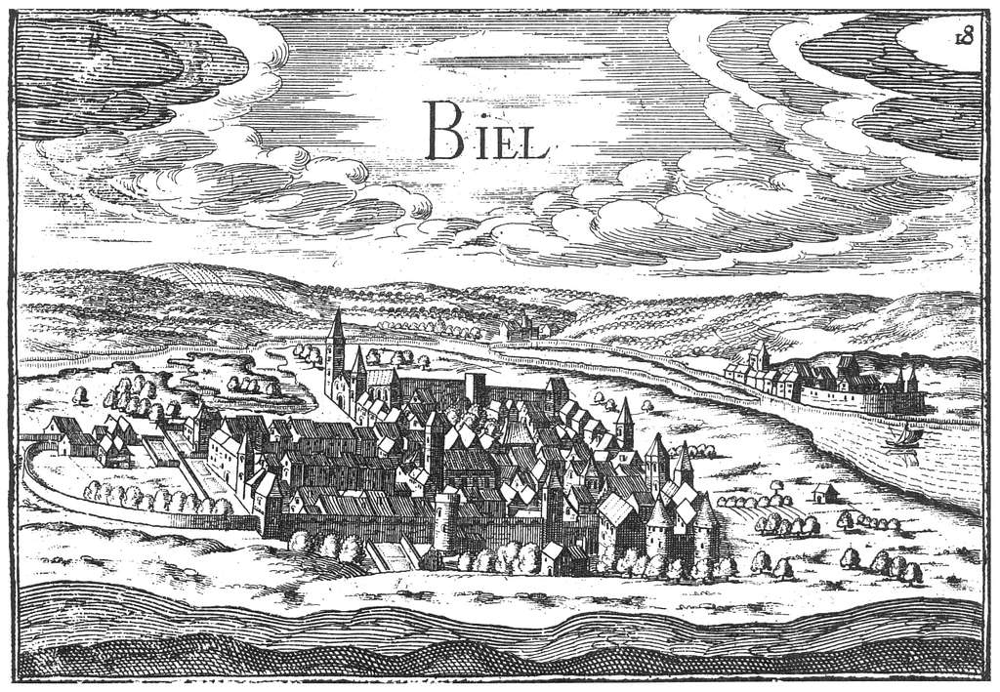

Місто Біль

Місто в Швейцарії в кантоні Берн, адміністративний округ Біль (Вікіпедія)
- Місто розташоване у двомовному кантоні, де офіційними є німецька та французька мови.
- Біль розкинувся біля підніжжя гір Юра і на північно-східному березі Більського озера.
- Невшатель, Золотурн і Берн лежать відповідно на захід, схід і південь від Біля.
- До них можна добратися за 30 хвилин на поїзді або авто.
- Населення Біля становить близько 51 тис. чоловік, з агломерацією близько 89 тис.